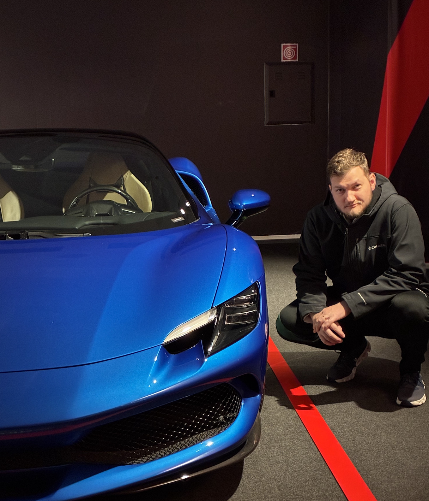

PSFY.
Simple Processes
Your process is unique. So is the way we solve it.
We get to know how your operation really works and connect the best tools to create efficiency, at an hourly rate lower than that of many consultancies offering the same availability or less.
www.PSFY.com.br

5 years in processes.
Two awards. One consultancy.
Agronomist from UFPR, the Federal University of Paraná, but processes have always been my passion. In college I ran an organic food delivery business and found out I liked designing how things work more than the technical side of agriculture.
At Pipefy I was responsible for continuous improvement of the back office and later joined the Partners team, helping other consultancies structure their processes. In 2024 I founded PSFY to bring this practical approach to companies in any industry.
Process mapping and implementation consulting.
We map how your operation works today, design the right workflow and implement it. Pipefy is our main tool, because we consider it the best on the market for building processes. We power it up with integrations, automations and AI agents to make everything more efficient, scalable and intelligent.
Not like other consultancies.
Clients who orchestrate with us.


PSFY has been an important partner in supporting our processes at Diageo. We already used Pipefy day to day, but we needed to evolve some workflows, especially those related to our fleet, to gain more efficiency and automation. PSFY helped improve processes that already existed, supporting the creation of more robust automations and the use of databases and conditional logic, always in a practical way aligned with our operation.
Processes that work in practice.
GRS. From first contact to repeat purchase.
Two connected processes that cover the full customer cycle. Whoever closes in the first goes straight into the second.
A 6-step method + ongoing improvements.
Delivery in stages with full transparency: you follow, validate and approve each part. Once the project is ready and running, ongoing improvements are billed by the hour.
What's the right format
for your
company?
FORMATS
Hours Package
For your first engagement. Use it to start from scratch or for adjustments, fixes and small implementations.
- →On-demand execution
- →Flexible schedule
- →Then $40/hour, or $65/hour with integrations
- →No long-term commitment
Monthly Consulting
A dedicated analyst to keep improving your processes, with recurring meetings and a roadmap.
- →An analyst dedicated to you
- →Weekly progress meetings
- →Ongoing improvement roadmap
- →Priority support
Fixed-Scope Project
To build a specific area from scratch, with a defined scope and timeline, which can include AI agents.
- →Detailed discovery
- →Development in stages
- →AI agents implementation
- →Team training and handoff
Within 1 business day you get a tailored proposal.
Pipefy training.
Your team really using Pipefy, not just clicking buttons. You choose the format and number of hours that fit your operation.
-
Diagnostic before trainingWe sit down with your process team and understand what you already have in place.
-
Improvement suggestions along the wayOur trainers are process consultants, not by-the-book instructors, so we point out where things can improve.
-
Internal and external clientsWe train your internal team and also the external clients of your operation.
-
A self-sufficient team at the endThe goal is autonomy. Your team leaves knowing how to use Pipefy without depending on anyone.
Ready to orchestrate your next process?
Request a detailed quote or talk to one of our agents. We map opportunities, understand your situation and show you how it would work in practice.